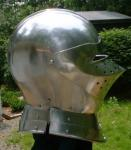
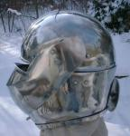
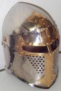
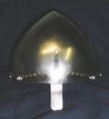
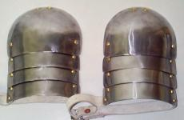
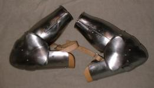
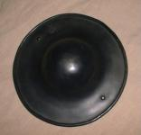
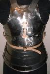

My Past Armour Projects and Patterns
Last Changed: April. 6, 2001
Recent Changes
(click on any image for larger/more views)
Please read the FAQs and Notes before asking questions
       


Older Projects


Please note that I make armour is a hobby not as a
business. I publish all my patterns on my web site in an effort to encourage
more people to get into armouring. If you are looking to buy armour I recommend
the following armouries:
Keep in mind that each armourer does things a little differently
even when trying to make an exacted copy of the same thing.
For more information contact :
Craig Nadler
mailto:cwn@nh.ultranet.com
|
This Armourers
Ring site is owned by
Craig Nadler. Want to join the Armourers Ring? |
|---|
| [Skip Prev] [Prev] [Next] [Skip Next] [Random] [Next 5] [List Sites] |

Copyright 2000 Craig W. Nadler All rights reserved